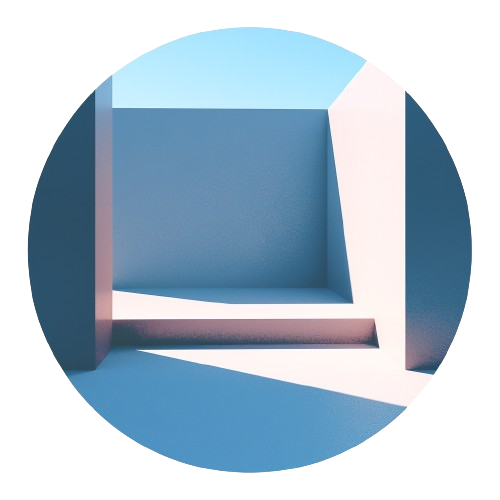

Hu Kenneth
Secret作為模組化區塊鏈
區塊鏈架構模型隨著過去十年區塊鏈技術的發展，我們正在見證區塊鏈架構以及看待它和分類它的方式的演變。在這篇文章中，我們將描述最受歡迎的區塊鏈架構模型——整體式、分層式和模組化，並了解Secret的新願景如何適應新穎的模組化範式。讓我們深入了解一下。整體模型從比特幣開始，最初的區塊鏈是使用整體架構創建的，其中一個軟體負責所有功能。比特幣、以太坊、Solana以及它們各自的克隆和變體——所有這些區塊鏈至少在最初遵循相同的整體設計。整體設計有其優點——區塊鏈節點的所有部分都在同一個可執行檔中運行，這意味著測試和部署相對容易、不同模組之間的低延遲通訊、資源效率等等。然而，整體設計是僵化的，可能會阻止根本性的改變——畢竟，一切都是緊密耦合的。層次模型隨著技術的發展和區塊鏈使用的成長，這種架構的限制變得明顯，人們開始考慮「第二層」或「L2」解決方案，第一個L2網路是更快的支付基礎設施，例如比特幣的閃電網路和以太坊的Plasma，隨後是透過大量的解決方案，如Polygon、Optimism、Arbitrum等等。最初，該架構假設只有兩層，但整齊的分層結構確實有其魅力，人們開始將Dapp稱為“Layer3”，將用戶界面稱為“Layer4”，將跨鏈橋接服務稱為“LayerZero”